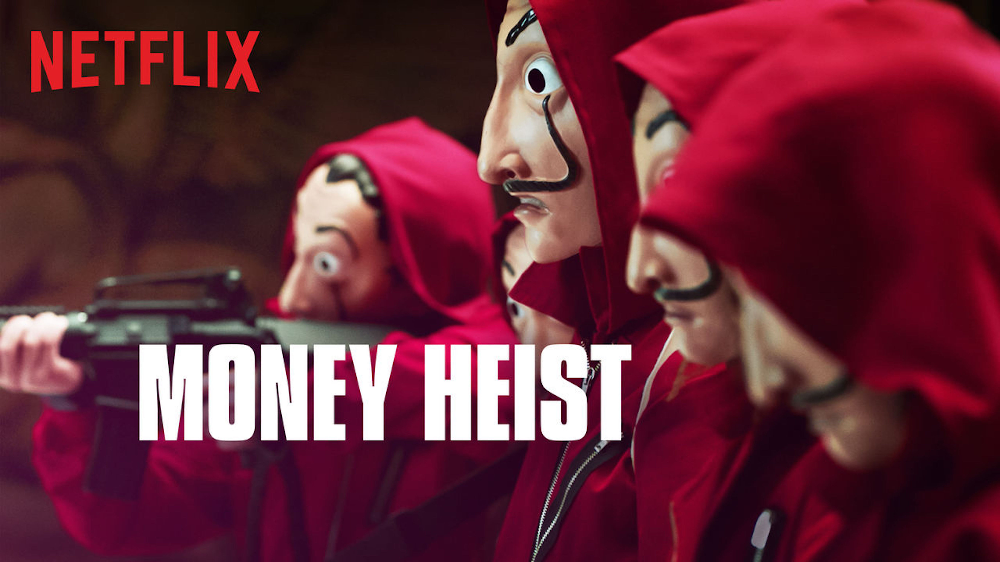
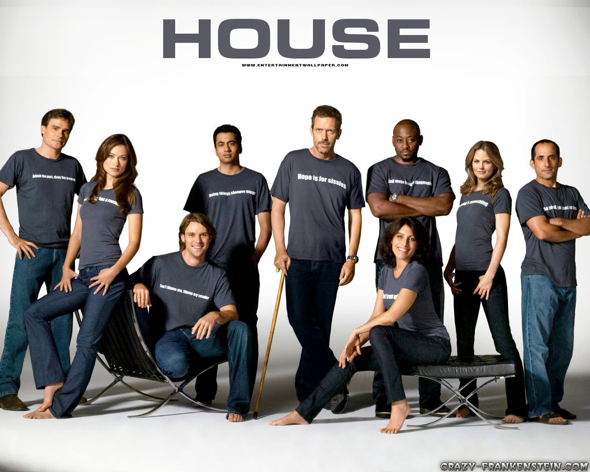
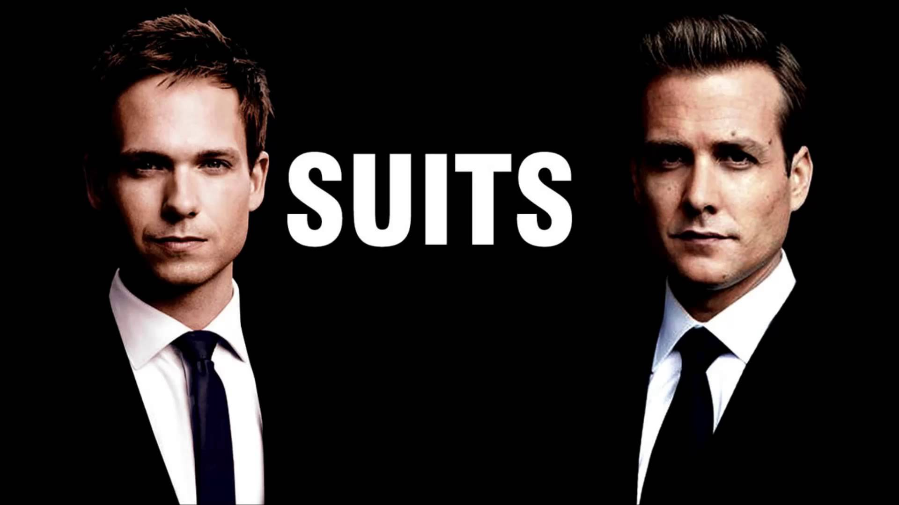
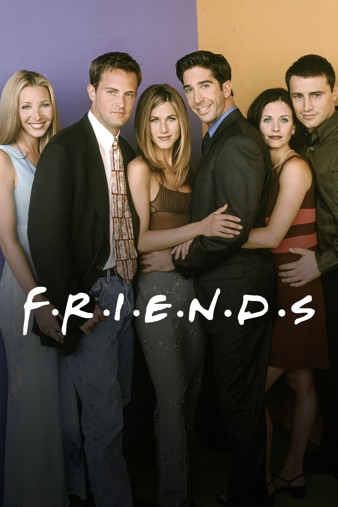
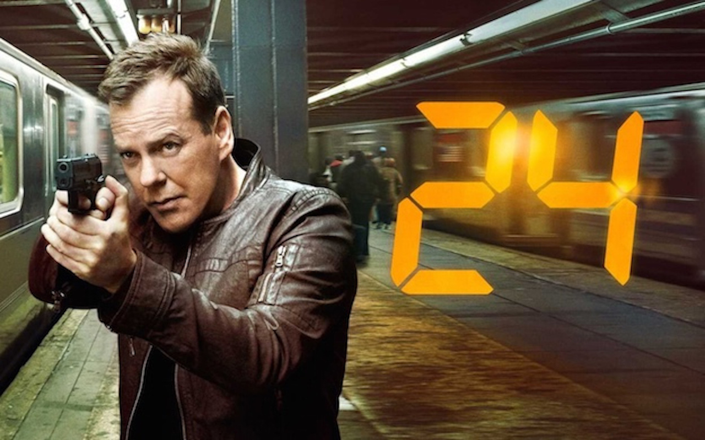
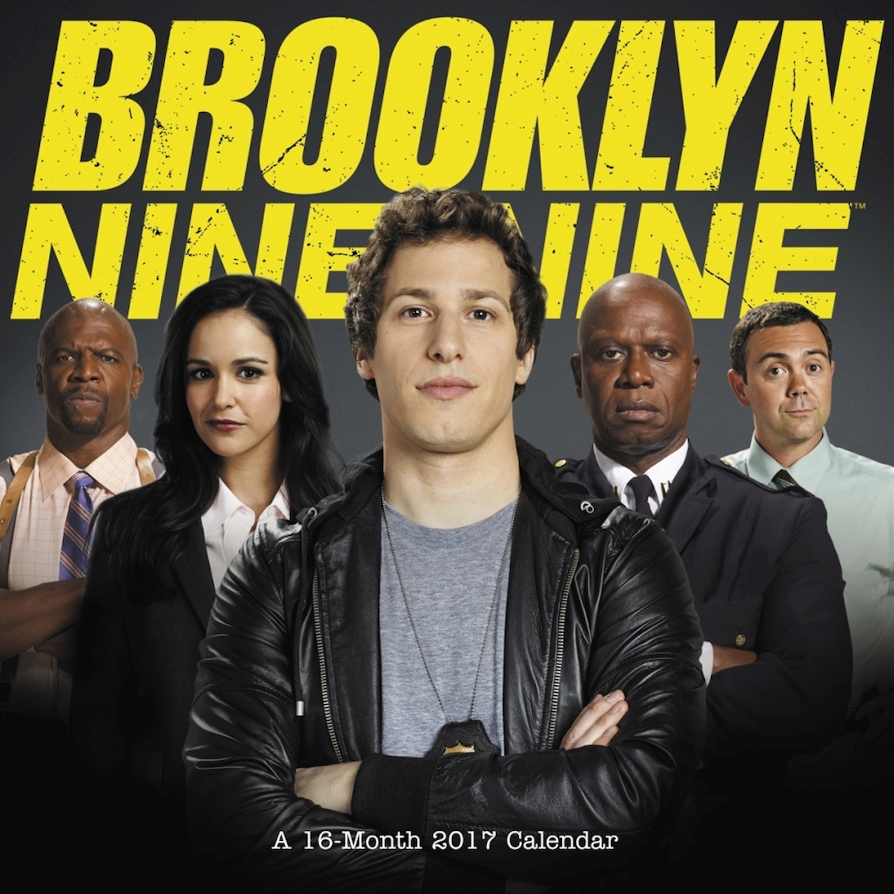

|  |
Money HeistA mysterious man, known as "The Professor", is planning the biggest bank heist in history. To carry out the ambitious plan, he recruits a team of eight people with certain abilities who have nothing to lose. The goal is to enter the Royal Mint of Spain in Madrid, the capital of Spain, and print €2.4 billion. |
|  |
House MDDoctor Gregory House is the Head of Diagnostic Medicine at Princeton-Plainsboro Hospital in New Jersey. His, and his team's, job is to solve extreme cases, where the cause of the patient's symptoms has eluded other doctors. He is a genius, with a rare gift for deduction and diagnosis, and a love for solving puzzles. |
|  |
SuitsSuits is set at a fictional law firm in New York City, and follows talented college dropout Mike Ross, who begins working as a law associate for Harvey Specter, despite never attending law school. |
|  |
FriendsFollows the personal and professional lives of six twenty to thirty-something-year-old friends living in Manhattan. Rachel Green, Ross Geller, Monica Geller, Joey Tribbiani, Chandler Bing and Phoebe Buffay are six 20 something year-olds, living off of one another in the heart of New York City. |
|  |
24Jack Bauer, Director of Field Ops for the Counter-Terrorist Unit of Los Angeles, races against the clock to subvert terrorist plots and save his nation from ultimate disaster. In this concept drama, each season takes place within one 24 hour period. |
|  |
Brooklyn 99Detective Jake Peralta is a good enough cop that he's never had to work that hard or follow the rules too closely. That is, until the precinct gets a new commanding officer, Captain Ray Holt, who reminds this hotshot cop to respect the badge. |